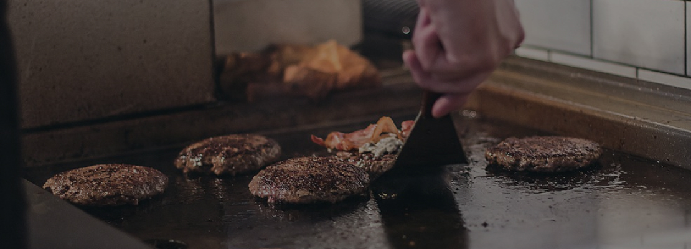

street 88
На сегодняшний день Street77 является одним из ведущих заведений в сфере быстрого питания. Начали свою деятельность в 28 августа 2015 году. Первый филиал был открыт в ТРК NEXT. На начальном этапе развития меню не могло похвастаться большим изобилием, но разнообразие всевозможных сэндвичей, которые на тот момент были основой меню, быстро смогли завоевать любовь гостей. Довольные результатом, но не намеренные останавливаться на достигнутом, мы продолжили совершенствоваться. Спустя всего пару месяцев, 25 октября 2015 года был открыт новый филиал в ТРЦ Samarqand Darvoza. И только спустя немногим больше полутора года, 14 мая 2017 года был открыт наш основной филиал на Ц1, уютное заведение, где можно приятно провести время с семьёй, друзьями и любимым человеком. Изменения в меню проводились колоссальные, многое было убрано, что-то изменено, и ещё больше добавлено, но неизменными остались качество и вкус, так высоко ценимые нашими дорогими посетителями. Стараясь радовать гостей, мы расширяем зоны доставки, обновляем меню, соответствуя брендам мировых стандартов. Каждый ингредиент, используемый на нашей кухне, проходит тщательный контроль, чтобы в итоге стать вкусным блюдом и украшением вашего стола! На сегодняшний день Street77 готов порадовать вас и ваших близких вкуснейшими бургерами с котлетами из рубленой говядины, филе минтая, хрустящей курочкой в панировке, изысканными салатами, супами, а с недавних пор ещё и пиццей! И на достигнутом останавливаться мы не намерены. Спасибо, что изо дня в день, из года в год остаётесь с нами, давайте же будем создавать свое собственное меню, пожелания наших гостей - основа наших инноваций, и когда нибудь на каждой улице Ташкента Street77 будет радовать вас нашими любимыми блюдами!